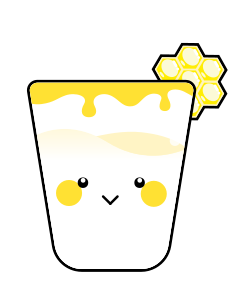

GLASS OF EMOTION
เครื่องดื่มสำหรับใจคุณตอนนี้

นมอุ่น
ทำไมคุณถึงเหมาะกับ “นมอุ่น”
นมอุ่น
-
 ทริปโตเฟนในนม ช่วยสร้างเซโรโทนิน ซึ่งเป็นสารช่วยควบคุมอารมณ์ให้คงที่ ทำให้รู้สึกผ่อนคลายและอารมณ์ดีขึ้น
ทริปโตเฟนในนม ช่วยสร้างเซโรโทนิน ซึ่งเป็นสารช่วยควบคุมอารมณ์ให้คงที่ ทำให้รู้สึกผ่อนคลายและอารมณ์ดีขึ้น
-
มีแคลเซียมและแมกนิเซียม ช่วยผ่อนคลายความตึงเครียดของระบบประสาทและร่างกายที่เกิดจากความโกรธ
-
ความอุ่นของนม ช่วยปรับอารมณ์ทำให้จิตใจสงบลง
ท็อปปิงเพื่อดูแลใจ
น้ำผึ้ง
-
มีคาร์โบไฮเดรตธรรมชาติ ซึ่งช่วยให้ทริปโตเฟนเข้าสู่สมองได้ดี ทำให้ร่างกายหลั่งเซโรโทนินมากขึ้น
-
ช่วยปรับความดันโลหิต ที่พุ่งสูงให้กลับเข้าสู่ภาวะสมดุล
-
ลดความฟุ้งซ่าน ทำให้ใจเย็นลง
ข้อควรระวัง !
แม้นมจะมีประโยชน์แก่ร่างกาย แต่ก็ควรดื่มใน
ปริมาณที่พอดี เพราะอาจได้รับไขมันเกินจำเป็น
โดยปริมาณที่ควรดื่มคือ 2 แก้วต่อวัน

สำรวจความรู้สึกของคุณกัน!
ชั้นความรู้สึกของคุณ
รู้สึกโกรธ
ไม่พอใจหรือโมโห เพราะเหตุการณ์หรือคน
มาพร้อมความต้องการเผชิญหน้าหรือแก้ไข
มาพร้อมความต้องการเผชิญหน้าหรือแก้ไข
รู้สึกขายหน้า
รู้สึกอับอายหรือถูกดูถูก ทำให้สูญเสียศักดิ์ศรี
และความเคารพตนเอง
และความเคารพตนเอง
รู้สึกถูกดูหมิ่น
รู้สึกว่าใครไม่เคารพคุณ
หรือมองข้าม
ความสำคัญของคุณ
รู้สึกเป็นตัวตลก
รู้สึกว่าถูกล้อ
หรือทำให้ดูแย่จนอับอาย
วิธีรับมือและโอบกอดความรู้สึกนี้
- หลับตา สูดหายใจเข้าลึก ๆ แล้วผ่อนออกช้า ๆ ทำซ้ำหลายรอบ ใจจะสงบและหายใจสม่ำเสมอขึ้น
- มองเรื่องกังวลด้วยอารมณ์ขัน แกล้งล้อเลียน
ตัวเอง ดูหนังตลก หรือคุยกับคนตลก จะช่วยให้อารมณ์ดีขึ้น - จัดตู้หรือเคลียร์ของที่ไม่จำเป็น ใจจะโล่งขึ้น หรือตบหมอน ขว้างตุ๊กตานุ่ม ๆ ก็ช่วยคลายความเครียดได้
- เมื่ออารมณ์ไม่ดี ลองทำสิ่งที่ชอบ เช่น เดินเล่น อ่านหนังสือ หรือคุยกับเพื่อน ช่วยให้ใจสงบและพบความสุขใหม่ ๆ
“Everything that irritates us about others can lead us to an understanding of ourselves.” - Carl Jung